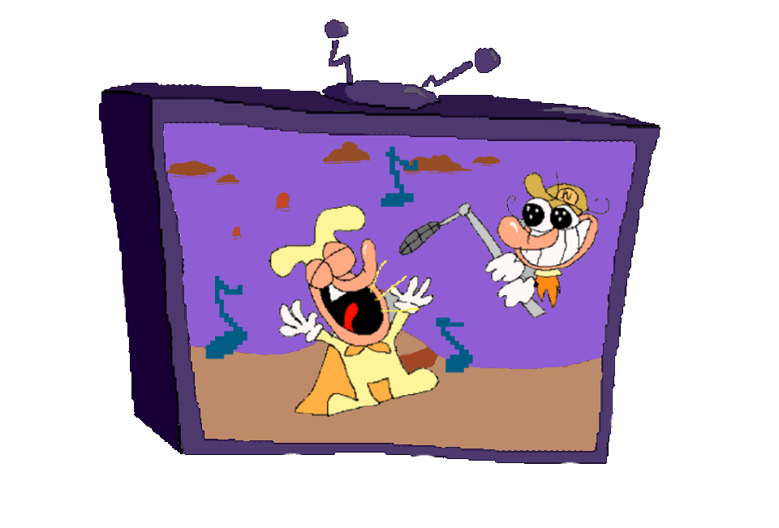
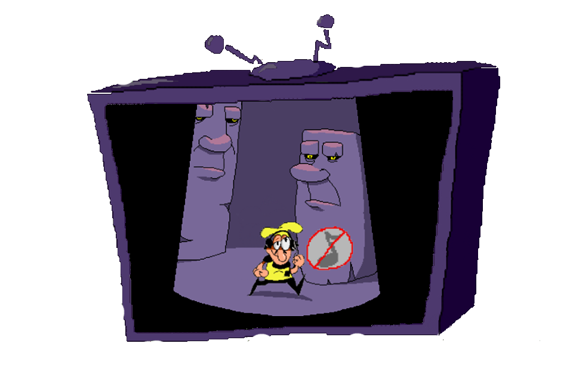

Pizza Tower Web Port Launcher

Pizza Tower 1.1.0 (Sound Build)
This is the most recent build, which has Sound
This Build is stable, but it's still a Work in Progress
Click Here to Play

Pizza Tower 1.1.0 (Fast Loading Build)
This Build doesn't have Sound, but will load faster
For those that have slower WiFi speeds or slow computers
Click Here to Play